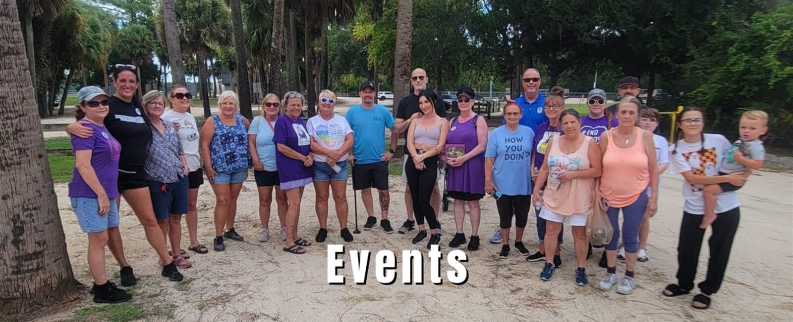

About the Foundation
Neighbors who decided the Flagler County Drug Court Foundation was worth supporting.
A Flagler County 501(c)(3), founded in 2009 and run by volunteers.
Who we are
The Flagler County Drug Court Foundation is a nonprofit created by residents of Flagler County who believe in the drug court program. A nonprofit built to support a public agency is an unusual arrangement — and a deliberate one. The court has a budget for judges, case managers and supervision. It does not have a budget for the small, immediate, unglamorous things that decide whether a person can keep showing up.
That is our job. We were formed to solicit community support in confronting substance use in Flagler County, and we believe that people who complete this program go on to strengthen this community for decades.
We do not bill the court for any of it. Everything the Foundation provides is paid for out of fundraising and donations, and every dollar of it stays in this county.
What all of it amounts to is fairly simple: we are lifesavers. Not one person — a team of volunteers, giving people a chance to save their own lives and then change them. Second chances are the whole point.
We operate under the name HOPE — Helping Our Participants Excel.

What drives us
Mission, vision, education, hope.
Mission
To support and promote the Flagler County drug court program — helping people recover from a substance use disorder and lead productive, healthy lives through community engagement, advocacy, and educational initiatives.
Vision
A compassionate and supportive community where people in the drug court program get the resources and opportunities they need to sustain recovery, break the cycle of substance use, and thrive as valued members of society.
Education
Two things save lives: knowing how to use Narcan, and dropping the stigma that keeps people from asking for help. We train the community in overdose response, and we work openly against the idea that a substance use disorder is a moral failure rather than a treatable health condition.
Hope
The Foundation brings mission, vision and education together to bring hope to families, to members, and to people working to lead healthy and productive lives.
How we talk about this
Words are part of the work.
Destigmatization is in our mission statement, so it has to be in our vocabulary too.
We say a person with a substance use disorder — not an addict, not an abuser, not a junkie. We say someone returned to use, not that they relapsed and certainly not that they are dirty or clean. A drug test is positive or negative, the way any other medical test is.
This is not politeness for its own sake. Stigmatizing language measurably reduces the chance that someone asks for treatment, and it changes how clinicians and courts treat the person in front of them. An organization that exists partly to reduce stigma cannot undercut its own mission in its own newsletter.
We also do not publish before-and-after stories, mugshots, or rock-bottom narratives. Recovery is not a spectacle, and the people in this program are not marketing material.
Why we lead with this
Stigma is the single biggest thing holding people down.
Ask around and most people — well over half — will tell you that somebody in their family or their circle of friends has been through this. Almost everyone knows. Almost nobody wants to talk about it, because it hurts.
That silence has a cost. Tell a person often enough that they are nothing but a bum, that they are a criminal, that they will never be anything else, and after a while they believe it. That belief keeps people using more reliably than any substance does.
It also gets the cause backwards. The overwhelming majority of people with a substance use disorder are carrying trauma from early in life, and a great many of them could not tell you what it was. A difficult birth. Something at three or four years old. Parents arguing in front of a child who had no way to process it. It sits there for years, and then something triggers it.
Family history matters too, and it is worth knowing about before it repeats itself. Having it in your family does not mean it is coming for you — but it is a reason to talk to your kids honestly and early, rather than after something has already gone wrong.
None of this is an excuse, and the program does not treat it as one; the accountability in drug court is real and relentless. But it does explain why “just stop” has never worked on anyone. So we say it plainly: this is a treatable health condition, the people in this program are our neighbors, and second chances are the entire point.
In their own words
Voices from the program
[REQUIRES SIGNED CONSENT — 42 CFR Part 2]
This space is reserved for a graduate or participant to speak for themselves. It is intentionally empty. No story has been written here, not even as a sample, because a fictional testimonial from a recovery program would be both dishonest and a stigma risk in itself.
Before anything appears here, the Foundation needs a written, signed, specific release from the person telling the story. Records tied to substance use treatment are protected under 42 CFR Part 2, which is stricter than HIPAA: consent must name what is disclosed, to whom, and for how long, and it can be revoked. A general photo release is not sufficient.
Practical guidance: let the person write or approve their own words, do not use a last name or an identifying photo unless they explicitly ask for it, and confirm the release is on file before publishing. Please involve the drug court coordinator.
The Road to Recovery
Our podcast
Honest conversations with people who have lived it — graduates of the program, family members, counselors, law enforcement, and community partners.
[PODCAST LINKS — CLIENT TO SUPPLY] Send the Spotify / Apple Podcasts / YouTube URLs for “The Road to Recovery” and we will link them here and in the footer.
What we are working toward
Goals, stated plainly, because we are not there yet.
These are not services we offer today. They are what we would build with more support, and we would rather say so out loud than quietly want them.
Two recovery residences
To enter drug court here you need a Flagler County address, and by the time many people reach us the bridges to the ones they had are burned. Most sober living houses in this market are a business first — six people, two to a bedroom, several hundred dollars each a month, buy your own food. We want to own one house for men and one for women, and charge only what it costs to keep them open.
A sober club in Flagler County
Somewhere to go on a Friday night that has nothing to do with alcohol — pool tables, ping pong, a dance floor, a reading room. Open to anybody, whether or not they have ever been near this program. Right now the county has nothing like it.